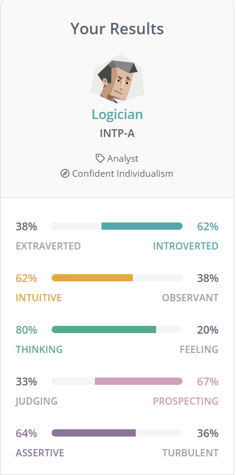

Minh Nguyen s3841042
My name is Minh Nguyen, and I was born here in Melbourne, Australia and come from a Vietnamese background. I completed year 12 two years ago in 2019 and am starting my first year again in 2020 after having deferred last year due to the covid outbreak and the switch to online learning. As for extracurricular activities, I was a swimmer for 9 years of my life but quit to transition to martial arts, learning Muay Thai for some years. But as of right now, I am currently just studying and working as a chef at a cafe.
I was always interested in electronics when I was a child but did not have my first computer until I was 13. Ever since then, I had a passion for information technology due to how limitless the possibilities can be and what we could do with them, with the only restraint being our own capabilities. A person that also sparked my interest in IT was someone named Michael Reeves, who is an entertainer on the YouTube platform that has interesting creations that just appeared surreal. I first started any form of coding or knowing what it was back in 2016, where I had started off with the program Scratch in school. From then on, year after year, I would progress further and further into coding, learning a bit of python and C#.
I decided to go to RMIT as I wanted to go somewhere that I could learn a lot from and expand my knowledge in the field of technology. As someone who is a firm believer that technology advancement is progressing quickly, I find that the knowledge I can obtain from RMIT would be catered to what I want in the future, hoping that I will develop the skills as well as receive assistance in selecting a pathway that I will be taking in the future, during or after my studies.
During my studies, I expect to learn the fundamentals on how to code and learn different types of languages as well as expand on and grasp concepts that can be applicable to real-life scenarios as well as to different coding languages. As stated above, I also wish to develop essential skills that will assist me in becoming employable as an IT analyst.
As stated above, being an IT Business Analyst would be my ideal job. It is about working together in a team to cooperate between the IT and executive branches, trying to improve the IT quality as well as analysing what the business needs.
First, to apply for an IT business analyst position at Polaron, I am required to have at least a Tertiary certificate in Information Technology or Computer Science. With this degree, it is expected that I have knowledge of some coding languages such as JavaScript, HTML, CSS, or SQL. Further skills that are required for this job is that I must have already worked in the IT field for experience, reinforcing my knowledge and experience of all sorts of programming languages as well as have experience in project management.
As of right now, the skills and qualifications I have are limited, as I am currently studying to finish the degree of my Bachelor of Information Technology. Despite needing work, I do have very few experiences in JavaScript and SQL.
Despite this being my ideal job, I am still far away from my goal, and have multiple rooms to work on. For a start, I am aiming to finish my course within the next 3 years of studying to obtain my degree in Information Technology. With that degree, it is expected that I would have a vast knowledge, or the required languages stated above. But as of right now, I can continue to expand on my knowledge of SQL and JavaScript by continuing to study it. Soon, I plan to also apply to work at other workplaces as work experience.

Test 3: Psychometric testThe Myers Briggs’ test indicates that my strengths involve being a great analyst as well as an abstract thinker, being able to recognise how things interrelate as well as excelling at analysing connections. People categories in the Logician categories are also considered open-minded as they reflect their theories off logic and facts rather than emotions.
Common weakness trends amongst the Logician personality are that they are often insensitive as they can often get caught up in their own logic that they lack the emotional consideration and connection. This can lead to other weaknesses too such as being condescending as they can get frustrated when sharing knowledge to people that cannot understand them the first time.
After having done all 3 tests, the results tell me a few things about me. Firstly, I am part of the category of a Logician, where I excel in analysing and viewing issues and the surrounding environment as factually objective as I can, questioning things along the way with no room for emotional validation. The second results also show me that I am an auditory learner, meaning that I learn better from listening to things instead of watching. These results may influence my behaviour in a team as I may lack the empathy to connect with teammates who are having some troubles understanding or doing the assigned tasks. Overall, when forming a team, I think I can work well in one as I tend to not have any feelings of stressed or anxiety and can be honest and straightforward to my team.
Horse racing in Australia has become a widely popular spectator sport, whether it be for entertaining purposes or people trying to win money. With the use of technology advancements over the years, more and more online bookies are opening to draw in punters. My project idea is a program/software that will assist users in being able to statistically select horses and win more from a mathematical standpoint rather than betting emotionally or irrationally, potentially saving users thousands of dollars.
I believe this project is interesting as for a long time now, many people believe that horse racing is unpredictable, and the house always wins. Which is true in some case, however, I believe with the assistance of a program that can run simulations of the races hundreds of times and using the true odds rather than the bookie odds, an expected value can be obtained from such program and potentially reveal the horse with the mathematically highest percent chance at winning, potentially leaving users with a profit over the long run through the laws of large numbers.
My project idea will essentially be a calculator with multiple features. Since it will be using real-time data, the calculator would be created and put online, where users will be able to access and use it accordingly. Firstly, the software would have a wide variety of online bookies to select from. This will allow users to select the bookies that they are betting from so that the software can use the data from that respective gambling site. Upon that selection, a list of all the upcoming tracks and races for the day would drop down for users to look at and select. After selecting a race, all the horses with their bookie odds would appear. The calculator would then be able to run constant simulations of the races (with the odds given from the bookie) to obtain a true odd of the horses. Once the true odd is obtained, there will be another section that shows the expected value. The expected value would be a mathematical formula, where each possible outcome would be multiplied by the likelihood of each outcome occurring and summing all the values up. After all the calculations, the highest positive expected value of the shown horse would then be the horse most likely to win the race. When it comes to the format and layout of the program, upon selecting the racetrack, the track and its race will appear at the top of the screen, with the numbers and names of the horses appearing below it in a column. I would display the expected value of the horses in another row so that it is easy to read. While the project idea in theory sounds simple, there are many obstacles that will be in the way; one of them is to figure out how to run a simulation of the horses that are racing to find the true odds and thus find the expected value. Another issue that I came upon is how I would be able to get real-time data of horses as there must be a refresh rate on the software/website to get the odds of the horses down as it is always changing until the very last second.
Since this is an ambitious project idea, there are a handful of required skills that need to be obtained to complete this program. First off, a computer is required as you would need to be able to code on software like visual studio. Another important skill to acquire would be the knowledge of maths relating to probability as well as the concept of expected value and true odds. Upon obtaining said skills, it is then required to apply the concepts to real-time horse racing.
If this project idea is successful, then the outcome would be huge for punters as users would in theory, lose far less money than they would’ve if they didn't have the software. This is because punters tend to have biased opinions on their favourite horses or tend to try and find patterns in horses racing without any proper evidence or reasonings. But with this calculator, punters would be able to win more, hopefully disproving the idea that “the house always wins.”